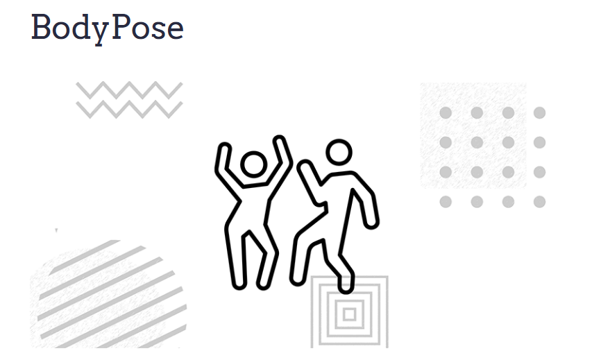
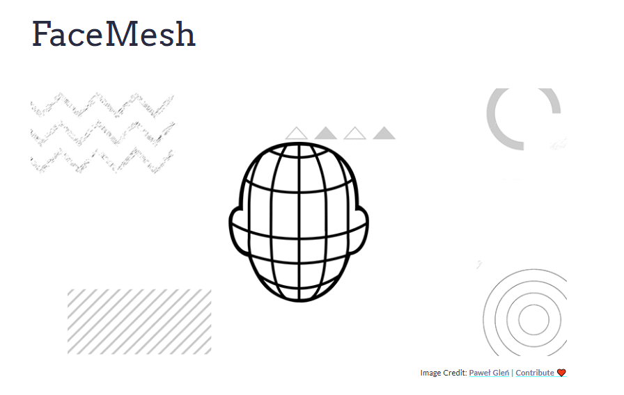
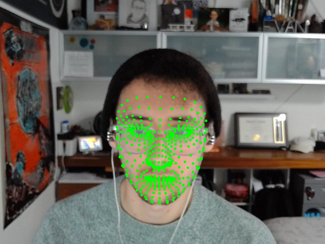
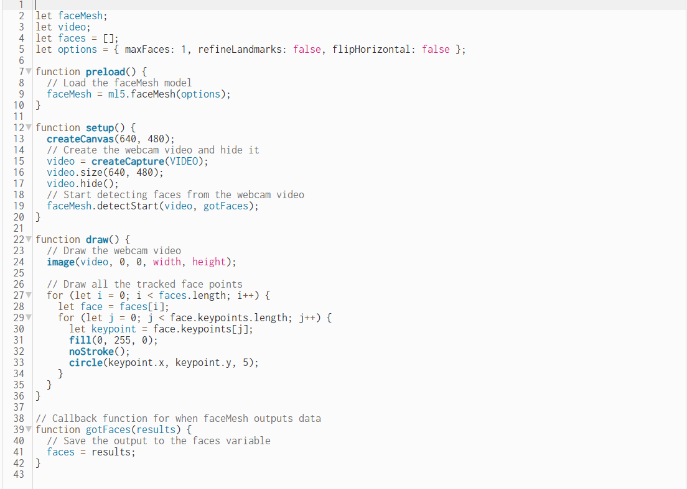

Final Project Documentation
My proposal for the project is to create a code that can detect faces/people in real time and possibly even make inferences on things like emotional state. This is something that I commonly saw utilized in the psychology field for research purpose during my undergraduate studies and I think it would be interesting to try and recreate this. This would be run through my web camera and detect people in my room.
Ideally, it’d be able to tell how many people are in the camera frame, for example in this image below it’d be able to differentiate each of the individual faces and make separate frames for each of them.

 I’d also love if it could do facial tracking and be able to tell where faces are and be able to display that. I feel like I essentially want to create that CCTV footage program that detects faces and people.
The first thing I did was dive into the ml5.js reference tab and look into what kinds of facial recognition features existed in the ml5 library. I found something called BodyPose which is a “The ml5.js BodyPose is a pretrained full-body pose estimation model that can estimate poses and track key body parts in real-time.” This proved to be very helpful for starting out and understanding what I was working with in ml5. However I really wanted something that would be more specific to the face and not the pose, so I needed to continue looking further.
I’d also love if it could do facial tracking and be able to tell where faces are and be able to display that. I feel like I essentially want to create that CCTV footage program that detects faces and people.
The first thing I did was dive into the ml5.js reference tab and look into what kinds of facial recognition features existed in the ml5 library. I found something called BodyPose which is a “The ml5.js BodyPose is a pretrained full-body pose estimation model that can estimate poses and track key body parts in real-time.” This proved to be very helpful for starting out and understanding what I was working with in ml5. However I really wanted something that would be more specific to the face and not the pose, so I needed to continue looking further.

 Now that I know roughly what I want to do, I needed to find a library to further support what I was doing. I browsed around a bit, looking into both YouTube tutorials and the ml5 library and eventually found FaceMesh, which was exactly what I was looking for.
Now that I know roughly what I want to do, I needed to find a library to further support what I was doing. I browsed around a bit, looking into both YouTube tutorials and the ml5 library and eventually found FaceMesh, which was exactly what I was looking for.

 By following the instructions and example code provided by ML5, I was able to incorporate facial tracking into my p5 file. It now looked something like this:
By following the instructions and example code provided by ML5, I was able to incorporate facial tracking into my p5 file. It now looked something like this:

 My code looked like this:
My code looked like this:

 Now that I had my facial tracking setup I wanted to be able to add more onto it. In particular, I wanted to be able to find out how to add expression reading to it, including things like opening and closing your mouth. My goal is to be able to code something like opening your mouth triggering a background scene change.
Now that I had my facial tracking setup I wanted to be able to add more onto it. In particular, I wanted to be able to find out how to add expression reading to it, including things like opening and closing your mouth. My goal is to be able to code something like opening your mouth triggering a background scene change.